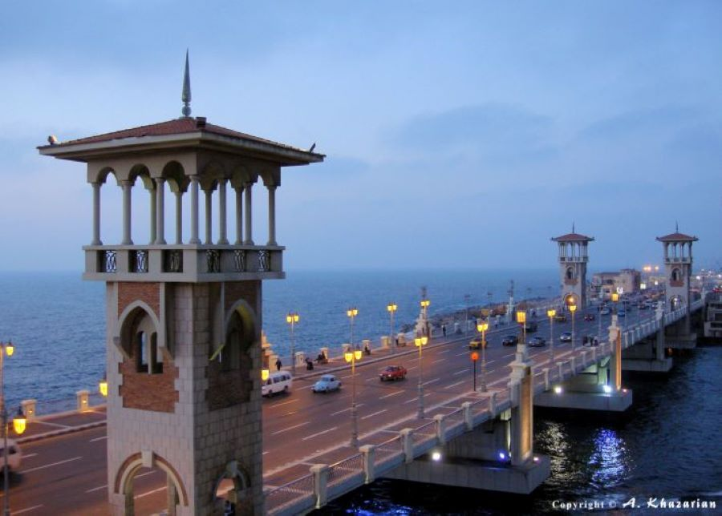
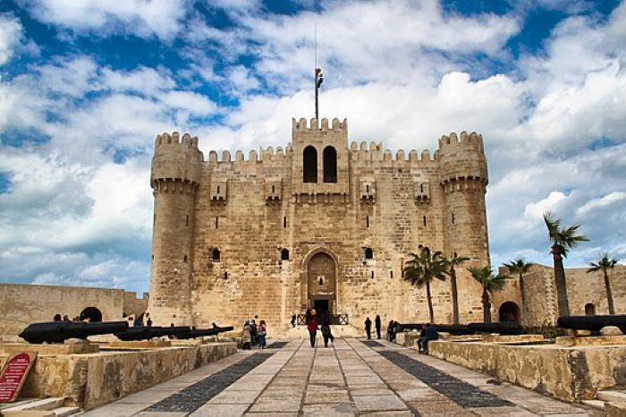
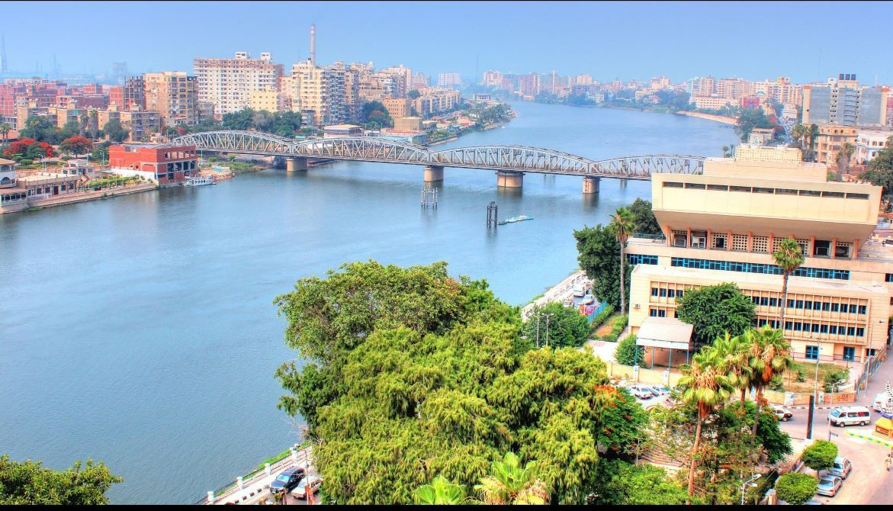
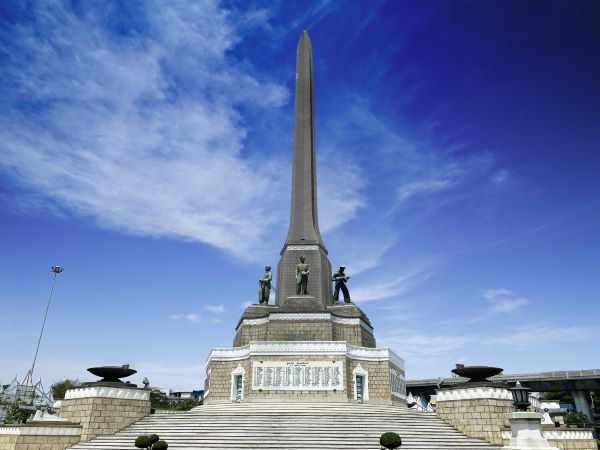
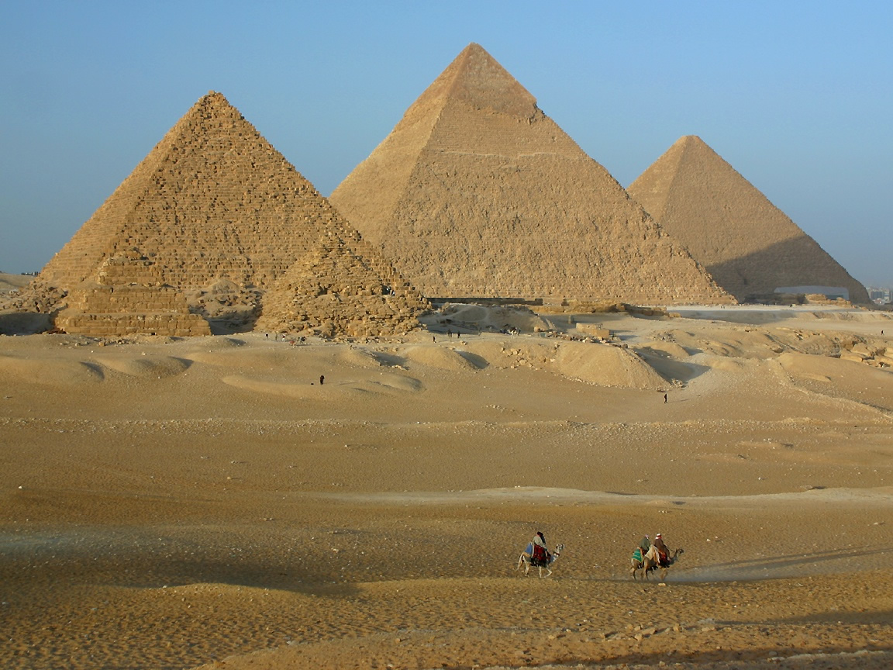

For the love of my roots
Alexandria, Egypt
This is one of the cities that I lived in growing up. Its the closest to my heart and still one of my favorite cities in Egypt.
Stanley Bridge
This bridge is an iconic landmark in the cosmopolition of Alexandria and a testament to the city's rich architectrual style and history.
Citadel of Qaitbay
The Citadel of Qaitbay is a 15th-century fort located on Egypt's Mediterranean coast. The Mamluk Sultan Qaitbay built it to defend the city of Alexandria from the Crusaders.
Mansoura, Egypt
I was born and raised in Mansoura. I lived there for the first 13 years of my life before moving to the U.S.
Victory Monument
One of the popular tourstic places in Mansoura. Also known as the Mansoura Memorial, an impressive structure commemorates the city's triumph over the Crusaders during the Seventh Crusade, a pivotal event in the city's history.
Cairo, Egypt
Cairo is the capital city of Egypt and one of the largest cities in Africa. one of its main charactristics is the Great Pyramids of Giza.
